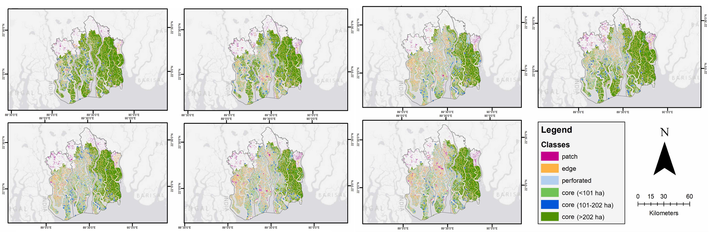
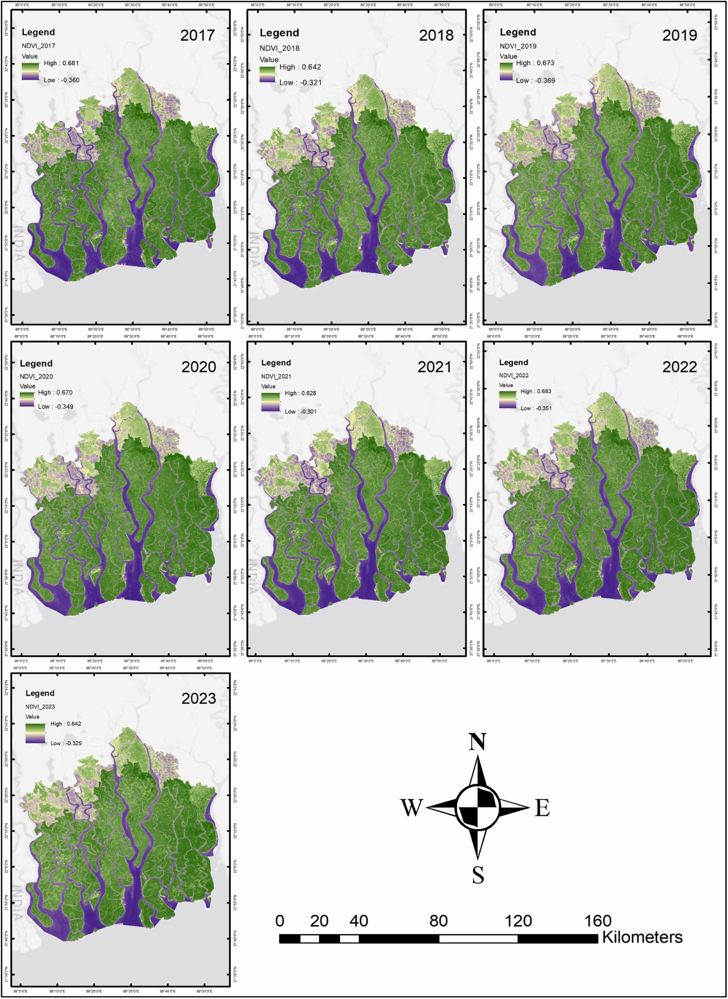
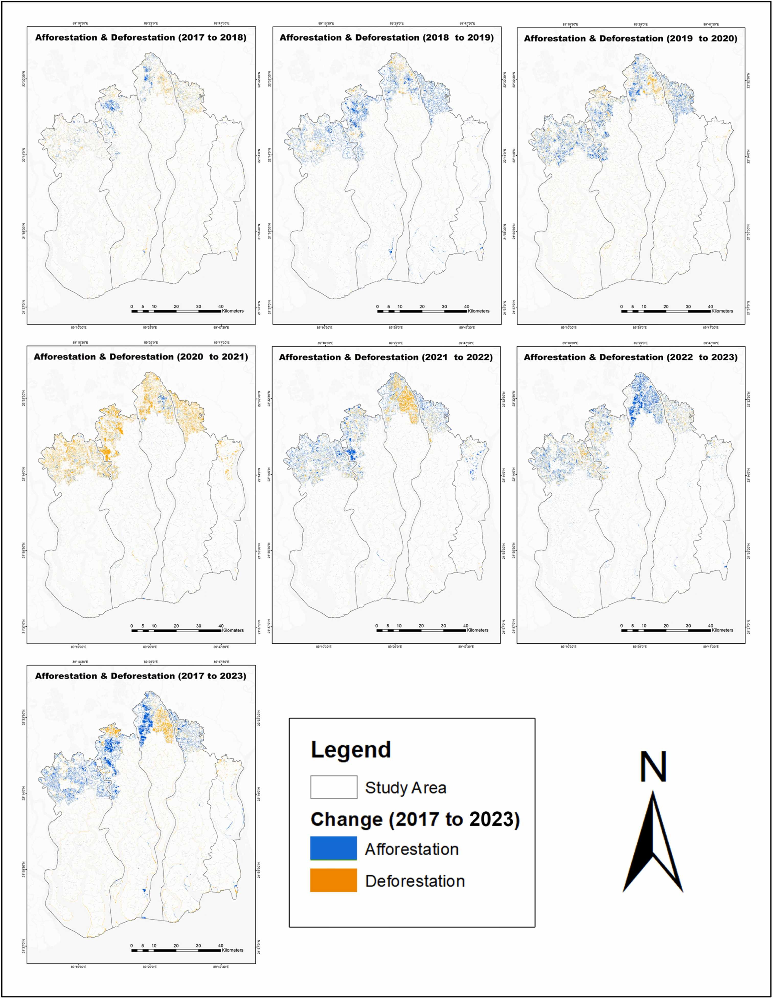

Forest dynamics and fragmentation analysis of the world's largest contiguous mangrove ecosystem using high-resolution Sentinel-2 imagery, 2017 to 2023.
Explore the Map ↓A six-stage workflow from satellite acquisition through fragmentation classification, applied annually across the Sundarbans from 2017 to 2023.
Cloud-free Sentinel-2 Level-2A imagery collected each year from March 1 to April 30 (peak growing season). Bands B2 through B12 processed via Google Earth Engine.
QA60-based cloud masking, Sen2Cor atmospheric correction (TOA to Surface Reflectance), image mosaicking for composite creation, and smoothing-filter denoising.
Pixel-based Random Forest classifier (50 trees) trained on 350 to 597 samples across four LULC classes: water body, mangrove forest, built-up area, and agriculture. 70/30 train-test split.
NDVI computed from Band 8 (NIR) and Band 4 (Red). Canopy coverage classified into three tiers: low vegetation (<0), low canopy (0 to 0.3), and high canopy (>0.3).
Confusion matrix evaluation on the 30% held-out test set. Producer's accuracy, user's accuracy, overall accuracy, and Kappa statistics computed for all seven years.
Landscape Fragmentation Tools (LFT v2.0) applied in ArcGIS 10.8. Six classes mapped: Patch, Edge, Perforated, and three Core tiers (<101 ha, 101 to 202 ha, >202 ha). 100m edge effect adopted.
The world's largest contiguous mangrove ecosystem, spanning 6,017 sq km in southwestern Bangladesh. Click regions to explore LULC data.
How the Sundarbans' continuous mangrove canopy broke apart between 2017 and 2023, tracked through six LFT v2.0 fragmentation classes.
Area in hectares for each class, 2017 to 2023. The collapse of Core (>202 ha) and rise of Edge and Perforated classes tell the story.
Core (>202 ha) dropped from 205,421 ha in 2017 to just 73,127 ha in 2020, a 64% loss in three years.

Tracking the interplay between mangrove cover, urban expansion, agriculture, and water bodies across the study period.
Mangrove forest area vs built-up expansion. Built-up grew from 4,212 ha to 31,698 ha over the study period.
Deforestation consistently outpaced afforestation except in 2021-2022, when the COVID-19 pandemic likely reduced human activity.


Normalized Difference Vegetation Index values and canopy coverage changes as proxies for ecosystem health across the Sundarbans.
High NDVI values (0.628 to 0.683) indicate persistent healthy vegetation. Peak recorded in 2023 at 0.683.
High canopy (>0.3 NDVI) decreased 3% from 2017 to 2023, from 444,985 ha to 431,512 ha.
Overall accuracy ranged from 88% to 91%, with Kappa statistics between 0.83 and 0.88 across all seven years, indicating near-perfect classifier agreement.
| Year | Waterbody PA/UA | Mangrove PA/UA | Built-up PA/UA | Agriculture PA/UA | Overall Accuracy | Kappa |
|---|---|---|---|---|---|---|
| 2017 | 94 / 97 | 86 / 95 | 93 / 82 | 90 / 88 | 91% | 0.87 |
| 2018 | 96 / 96 | 94 / 94 | 96 / 79 | 84 / 97 | 91% | 0.88 |
| 2019 | 95 / 88 | 94 / 88 | 92 / 92 | 88 / 94 | 91% | 0.88 |
| 2020 | 98 / 96 | 100 / 83 | 92 / 88 | 80 / 91 | 90% | 0.86 |
| 2021 | 90 / 95 | 90 / 95 | 93 / 84 | 78 / 82 | 88% | 0.83 |
| 2022 | 88 / 100 | 100 / 90 | 98 / 90 | 73 / 84 | 91% | 0.87 |
| 2023 | 90 / 97 | 94 / 100 | 94 / 88 | 82 / 84 | 90% | 0.85 |
What seven years of satellite monitoring revealed about the health and trajectory of the Sundarbans mangrove ecosystem.
Core forest (>202 ha) dropped 64% from 205,421 ha in 2017 to 73,127 ha in 2020. Deforestation, urban expansion, and agricultural conversion were the primary drivers.
Built-up area surged from 4,212 ha to 31,698 ha over the study period, a 7.5-fold increase concentrated in the northern periphery near settlements.
Deforestation outpaced afforestation in five of six interval periods. The sole exception was 2021-2022, likely linked to reduced human activity during COVID-19.
Edge class peaked at 112,190 ha and Perforated at 128,706 ha in 2020, signaling increasing forest vulnerability and habitat degradation at boundaries.
Despite fragmentation, NDVI high values remained between 0.628 and 0.683 across all years. The 2023 peak of 0.683 suggests remaining mangrove areas retain health.
High canopy coverage (>0.3 NDVI) declined from 444,985 ha to 431,512 ha, a 3% net loss over seven years indicating gradual structural thinning of the forest.
This study evaluated changes in forest cover and fragmentation in the Sundarbans, Bangladesh, from 2017 to 2023 using Sentinel-2 imagery and Google Earth Engine. The Sundarbans is the world's largest contiguous mangrove forest, covering approximately 6,017 sq km in southwestern Bangladesh, and is a UNESCO World Heritage Site.
The analysis employed Random Forest classification, NDVI-based vegetation health assessment, and Landscape Fragmentation Tools (LFT v2.0) to track the spatial and temporal patterns of forest loss. Results show that while localized regeneration (Patch class growth) offers some hope, the decline of core forest areas and persistent deforestation outpacing afforestation demand urgent conservation action.
Read the full paper →
Open Access
Published under CC BY 4.0 license. Received 3 July 2024, accepted 16 February 2025.